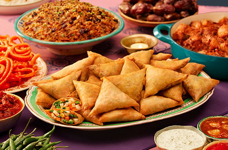

samosa recipe

Get ready to savor these crispy Kenyan Beef Samosas, packed with a flavorful beef filling and perfect for a delightful snack or appetizer. You'll be hooked
on these golden pockets of deliciousness in no time!
Ingredients
for 15 servings
FILLING
- 1 ½ tablespoons olive oil
- 1 lb ground beef
- 1 medium red onion, diced
- 1 clove garlic, minced
- 1 jalapeño, minced
- 1 teaspoon salt
- 1 teaspoon pepper
- 1 teaspoon ground coriander
- 1 teaspoon cumin
- 4 scallions, diced
- 1 cup frozen peas, defrosted
- 2 tablespoons fresh cilantro, chopped
WRAPPER
- 3cups all-purpose flour
- ¼ teaspoon salt
- 2 teaspoons olive oil
- 1 cup water, plus 2 tablespoons more
- 1 tablespoon flour, mixed with 1 tablespoon of water
- 3 cups canola oil
- lime wedge, for serving
preparation
- In a large pan over medium-high heat, heat the olive oil. Once hot, add the ground beef.
Use a spatula to break apart the meat and cook for 3 minutes. Add onion and co
ok until beef is brown and onion is translucent, about 4 minutes.
- Add the garlic, jalapeño, salt, pepper, coriander, cumin, and scallions to the meat.
Cook for 2 minutes. Add the peas and cilantro, then cook for another 2 minutes.
Remove the meat filling from the heat and let cool.
- In a large bowl, combine the flour, salt, olive oil, and water. Use your hand or a spatula to mix together.
Once the dough pulls away from sides of the bowl,
transfer to a lightly floured surface and knead for 4 minutes or until the dough is smooth and soft.
- Shape dough into a ball and brush with olive oil. Cover with plastic wrap and a warm damp tea towel.
Let rest for 30 minutes.
- Remove tea towel and plastic wrap and roll the dough out into a 10-inch (25-cm) long log. Cut into 10 even sections. Take one section and roll it into a ball. Place the ball on a lightly floured surface and use a rolling pin to roll it out into a thin circle about 10 inches (25-cm) in diameter. Repeat with the remaining dough. Stack the dough circles as you roll them out, sprinkling a bit of flour between each one and keeping them covered with plastic wrap so they don't dry out.
- In a greased large pan over high heat, place one of the circles of dough and cook for 10 seconds on each side. Repeat with remaining dough.
- Cut one of the par-cooked dough circles into four quarters. Take one quarter and, with the round side closest to you, fold the bottom half to the right. Use the flour paste to seal the fold. Repeat with the left side, crossing over your previous fold to create a cone like pocket. Fill the pocket with meat filling, then fold the remaining tip of the dough towards you and seal with flour paste. Repeat with the remaining dough and filling.
- In a large, deep pan, heat the canola oil to 350°F (180°C). Once the oil is at the correct temperature, carefully place 4-6 sambusas in the pan. Fry for about 5 minutes, flipping once, until light, golden brown. Remove from oil and drain on paper towels.
- Enjoy!